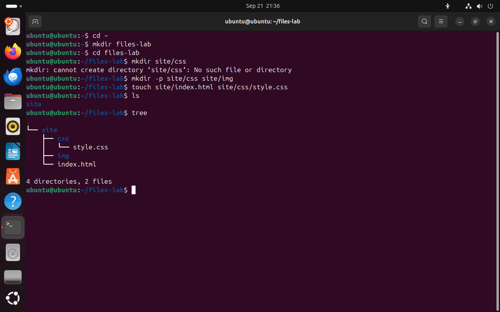
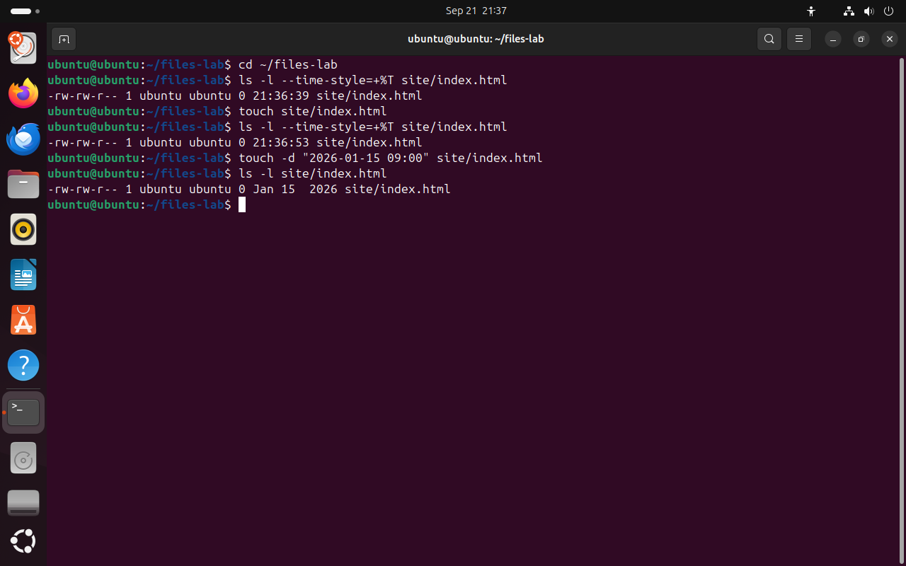
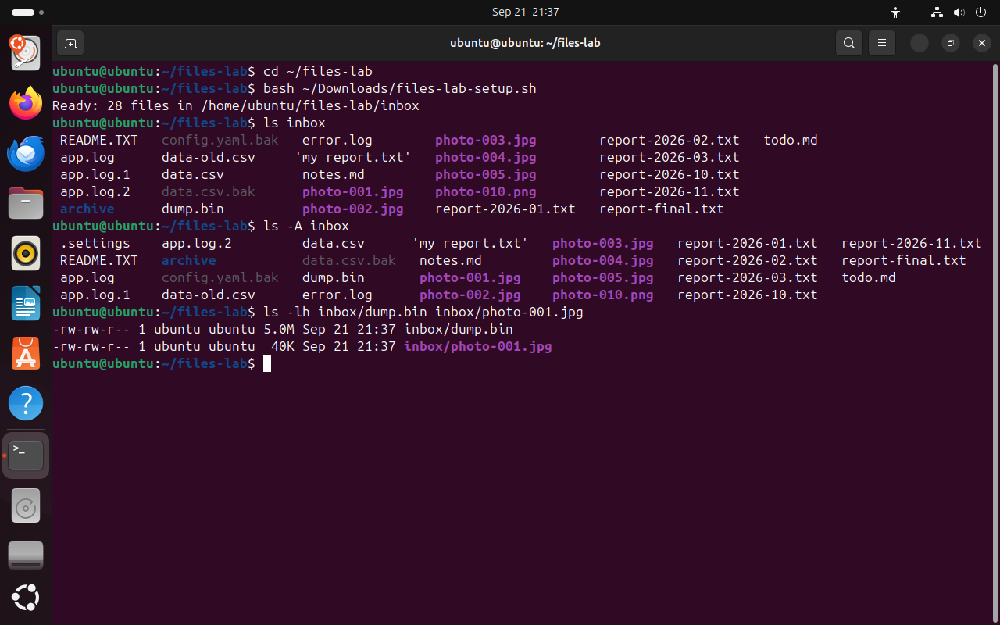

Часть 1 из 7
Каталоги и файлы
В этой части создадим рабочий каталог занятия, пустые файлы и учебный набор файлов. На этом наборе построены все следующие части.
1.1 Создание каталога: mkdir
Работа с файлами в терминале начинается с места, где эти файлы будут лежать. На прошлом занятии мы разбирали, что у каждого пользователя есть домашний каталог /home/имя и свои файлы держат в нём. Для этого занятия создадим в домашнем каталоге отдельный каталог files-lab. Все опыты занятия выполняются внутри него, поэтому системные файлы они не затрагивают.
Каталог создаёт команда mkdir (make directory — «создать каталог»). Ей передаётся имя или путь нового каталога. Если путь состоит из нескольких уровней, например site/css, то все каталоги, кроме последнего, уже должны существовать: mkdir создаёт только последний элемент пути и сообщает об ошибке, если предыдущего нет.
Когда промежуточных каталогов нет, нужен ключ -p (parents — «родительские каталоги»). С ним mkdir создаёт весь путь по порядку: сначала site, затем site/css. Если каталог уже есть, ошибки тоже не будет. Поэтому mkdir -p пишут в скриптах, которые запускаются повторно.
Это похоже на расстановку книг по полкам: поставить книгу на полку «css» в шкафу «site» можно только тогда, когда шкаф уже стоит в комнате. Ключ -p означает «если шкафа нет, сначала поставь его».
cd ~# домашний каталогчто делает
Что делает команда. Переходит в домашний каталог пользователя, у ubuntu это /home/ubuntu.
По частям:
cd- сменить текущий каталог
~- куда перейти (домашний каталог)
mkdir files-lab# каталог занятиячто делает
Что делает команда. Создаёт каталог files-lab в текущем каталоге.
По частям:
mkdir- создать каталог
files-lab- какой каталог создать
cd files-labчто делает
Что делает команда. Переходит в каталог files-lab, который лежит в текущем каталоге.
По частям:
cd- сменить текущий каталог
files-lab- куда перейти
mkdir site/css# каталога site ещё нетчто делает
Что делает команда. Пытается создать каталог css внутри site. Каталога site ещё нет, поэтому команда завершается ошибкой.
По частям:
mkdir- создать каталог
site/css- какой каталог создать (путь относительно текущего каталога)
mkdir -p site/css site/img# весь путь, два каталогачто делает
Что делает команда. Создаёт каталог site и в нём два каталога: css и img. Недостающий site создаётся автоматически.
По частям:
mkdir- создать каталог
-p- создать и все промежуточные каталоги; не выдавать ошибку, если каталог уже есть
site/css- какой каталог создать (путь относительно текущего каталога)
site/img- какой каталог создать (путь относительно текущего каталога)
touch site/index.html site/css/style.css# два пустых файлачто делает
Что делает команда. Создаёт два пустых файла: index.html в каталоге site и style.css в каталоге site/css.
По частям:
touch- создать пустой файл или обновить время изменения
site/index.html- какой файл (путь относительно текущего каталога)
site/css/style.css- какой файл (путь относительно текущего каталога)
lsчто делает
Что делает команда. Показывает имена файлов и каталогов в текущем каталоге, кроме скрытых.
По частям:
ls- вывести содержимое каталога
tree# структура в виде деревачто делает
Что делает команда. Рисует дерево каталогов и файлов, начиная с текущего каталога, и в конце печатает их количество.
По частям:
tree- нарисовать дерево каталогов
- 1каталога site нет, и mkdir сообщает об ошибке
- 2ключ -p создаёт недостающий каталог site
- 3tree рисует дерево от текущего каталога «.»
- 4итог: 4 каталога вместе с «.» и 2 файла
{kind=link}

Весь снимок ↗Без ключа -p команда mkdir не создаёт промежуточный каталог; tree показывает получившуюся структуру.
Что показывает снимок. mkdir без -p не смог создать site/css, потому что каталога site не было; с -p созданы все каталоги, а tree нарисовал результат.
Где это пригодится. Структуру нового проекта — каталоги для исходного кода, стилей, изображений — создают одной командой mkdir -p. Её же пишут в скриптах установки: повторный запуск не вызывает ошибки.
1.2 Пустой файл и время изменения: touch
В предыдущем примере файлы index.html и style.css появились после команды touch. У неё два действия. Если файла нет, touch создаёт пустой файл размером 0 байт. Если файл есть, его содержимое не меняется, а время последнего изменения становится текущим.
Время изменения хранится в inode файла вместе с размером и правами, мы разбирали это на прошлом занятии. Команда ls -l выводит его в каждой строке. По этому времени программы определяют, какие файлы изменились: программа резервного копирования копирует только новые файлы, система сборки пересобирает только изменённые исходные файлы. Поэтому touch применяют и для того, чтобы отметить существующий файл как изменённый.
Ключ -d записывает в файл заданные дату и время. На этом построен учебный набор следующего раздела: часть файлов в нём помечена датами мая и августа, и в части 5 мы будем искать старые файлы по времени изменения.
Ключ --time-style=+%T у ls выводит время с секундами: в обычном выводе разница в несколько секунд не видна. Для файлов старше полугода ls -l выводит год вместо времени, поэтому после touch -d в строке стоит 2026.
cd ~/files-labчто делает
Что делает команда. Переходит в каталог занятия files-lab из любого места.
По частям:
cd- сменить текущий каталог
~/files-lab- куда перейти (путь от домашнего каталога)
ls -l --time-style=+%T site/index.html# время с секундамичто делает
Что делает команда. Выводит подробную строку о файле index.html; время изменения показано с секундами.
По частям:
ls- вывести содержимое каталога
-l- подробный список: права, владелец, размер, дата
--time-style=+%T- выводить время изменения с секундами (формат %T — часы:минуты:секунды)
site/index.html- что показать (путь относительно текущего каталога)
touch site/index.html# файл есть: меняется только времячто делает
Что делает команда. Файл уже существует, поэтому его содержимое не меняется, а время изменения становится текущим.
По частям:
touch- создать пустой файл или обновить время изменения
site/index.html- какой файл (путь относительно текущего каталога)
ls -l --time-style=+%T site/index.htmlчто делает
Что делает команда. Выводит подробную строку о файле index.html; время изменения показано с секундами.
По частям:
ls- вывести содержимое каталога
-l- подробный список: права, владелец, размер, дата
--time-style=+%T- выводить время изменения с секундами (формат %T — часы:минуты:секунды)
site/index.html- что показать (путь относительно текущего каталога)
touch -d "2026-01-15 09:00" site/index.html# записать заданную датучто делает
Что делает команда. Записывает в файл index.html время изменения 15 января 2026 года, 09:00.
По частям:
touch- создать пустой файл или обновить время изменения
-d "2026-01-15 09:00"- записать заданную дату и время: "2026-01-15 09:00"
site/index.html- какой файл (путь относительно текущего каталога)
ls -l site/index.htmlчто делает
Что делает команда. Выводит подробную строку о файле index.html: права, владелец, размер, дата изменения.
По частям:
ls- вывести содержимое каталога
-l- подробный список: права, владелец, размер, дата
site/index.html- что показать (путь относительно текущего каталога)
- 1время после создания файла
- 2touch записал текущее время
- 3touch -d записал заданную дату
- 4размер 0: содержимое не изменилось
{kind=link}

Весь снимок ↗touch меняет время изменения файла и не трогает содержимое.
Что показывает снимок. Первый touch изменил только время файла, размер остался 0; touch -d записал дату 15 января 2026 года.
Где это пригодится. Время изменения используют программы резервного копирования и системы сборки. touch помогает отметить файл как изменённый или подготовить тестовые данные с нужными датами.
1.3 Учебный набор файлов
Для следующих частей нужен каталог с разными файлами: отчёты, фотографии, журналы, таблицы, резервные копии, скрытый файл и файл с пробелом в имени. Создавать его вручную долго, поэтому набор создаёт скрипт files-lab-setup.sh из материалов занятия.
Скрипт — это текстовый файл с командами оболочки. Команда bash имя-файла выполняет эти команды по порядку. Скрипт создаёт каталог ~/files-lab/inbox, а при повторном запуске удаляет только этот каталог и создаёт его заново. Так к исходному состоянию можно вернуться в любой момент, если в опытах что-то пошло не так.
- 1Скачайте
files-lab-setup.sh,files-lab-check.shиjournal-template.mdиз раздела «Материалы» на странице занятия. Firefox в Ubuntu сохраняет файлы в каталог~/Downloads. - 2Откройте
files-lab-setup.shв текстовом редакторе и просмотрите команды. Скрипт из интернета запускают только после того, как прочитали, что он делает. - 3Выполните
bash ~/Downloads/files-lab-setup.sh. Скрипт выведет строкуReady: 28 files. - 4Проверьте содержимое каталога командами
lsиls -A.
Ключ -A (almost all — «почти все») показывает скрытые файлы, имена которых начинаются с точки. В отличие от -a он не выводит служебные имена . и ... Ключ -h вместе с -l выводит размер в килобайтах и мегабайтах.
cd ~/files-labчто делает
Что делает команда. Переходит в каталог занятия files-lab из любого места.
По частям:
cd- сменить текущий каталог
~/files-lab- куда перейти (путь от домашнего каталога)
bash ~/Downloads/files-lab-setup.sh# создать inboxчто делает
Что делает команда. Выполняет команды скрипта files-lab-setup.sh: создаёт каталог ~/files-lab/inbox с 28 учебными файлами.
По частям:
bash- запустить оболочку bash и выполнить команды из файла
~/Downloads/files-lab-setup.sh- файл скрипта (путь от домашнего каталога)
ls inboxчто делает
Что делает команда. Показывает содержимое каталога inbox без скрытых файлов.
По частям:
ls- вывести содержимое каталога
inbox- что показать
ls -A inbox# вместе со скрытымичто делает
Что делает команда. Показывает содержимое inbox вместе со скрытыми файлами, но без служебных имён . и ..
По частям:
ls- вывести содержимое каталога
-A- показать скрытые файлы, кроме служебных . и ..
inbox- что показать
ls -lh inbox/dump.bin inbox/photo-001.jpg# размеры в K и Mчто делает
Что делает команда. Выводит подробные строки о двух файлах с размером в понятном виде: K, M.
По частям:
ls- вывести содержимое каталога
-l- подробный список: права, владелец, размер, дата
-h- размеры в понятном виде: K, M, G
inbox/dump.bin- что показать (путь относительно текущего каталога)
inbox/photo-001.jpg- что показать (путь относительно текущего каталога)
- 1скрипт создал 28 файлов
- 2скрытый .settings виден только с ключом -A
- 3имя с пробелом ls берёт в кавычки
- 4размеры в понятном виде: 5.0M и 40K
{kind=link}

Весь снимок ↗Каталог inbox после запуска скрипта: обычный и полный список, размеры двух файлов.
Что показывает снимок. Скрипт создал 28 файлов; скрытый .settings появился только в выводе ls -A; ls -lh показал размеры 5.0M и 40K.
Где это пригодится. Скрытые файлы с точкой — это обычно настройки программ. Если в каталоге «нет» файла, о котором говорит инструкция, сначала проверяют ls -A.
Итоги части 1
mkdirсоздаёт каталог; с ключом-p— весь путь и без ошибки, если каталог уже есть.touchсоздаёт пустой файл или обновляет время изменения существующего;-dзаписывает заданную дату.ls -Aпоказывает скрытые файлы,ls -lh— размеры в K и M.- Скрипт
files-lab-setup.shвозвращает каталогinboxв исходное состояние.
В отчётСнимок tree с каталогом site и снимок ls -A inbox.